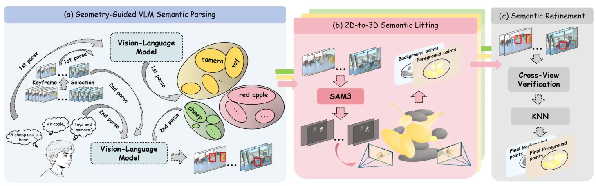

ZeroSplat：3D Gaussian Splatting 中的广义指代表达分割ZeroSplat: Generalized Referring Segmentation in 3D Gaussian Splatting
对语义 3DGS 和开放指令场景有明确价值且提供新基准；依赖位姿与多视图覆盖，实际鲁棒性待验证。
一句话工作总结
用多视图几何把 2D VLM 先验提升到 3D 点级，实现无需训练和特征存储的 0/1/N 目标语言分割。
摘要
本文提出 Generalized Referring 3DGS Segmentation，使查询可对应 0、1 或 N 个目标，并建立 GR-LERF 与 GR-ScanNet benchmark。ZeroSplat 是无需训练、无需附加语义特征的框架，通过稳健多视图几何约束将 2D VLM 先验提升到三维点级，从而避免逐场景语义特征优化和额外存储。实验显示其在广义与单目标场景均优于现有方法并保持较高效率。
Recent advancements in 3D Gaussian Splatting (3DGS) have enabled language-guided scene understanding. However, existing Referring 3D Gaussian Splatting (R3DGS) methods are fundamentally restricted to single-target queries. To reflect the ambiguity of real-world instructions, we introduce the Generalized Referring 3D Gaussian Splatting Segmentation (GR3DGS) task, which requires dynamically segmenting an arbitrary number of targets (0, 1, or $N$). To facilitate comprehensive evaluation of this new task, we construct two new benchmarks: GR-LERF and GR-ScanNet. Crucially, existing R3DGS paradigms exhibit fundamental technical bottlenecks that severely limit their performance on the GR3DGS task: they lack intrinsic 3D point-level understanding by operating merely on 2D rendered pixels, and they incur prohibitive computational overhead by requiring per-scene optimization to embed heavy semantic features. To dismantle these bottlenecks, we propose ZeroSplat, a novel training-free and zero-feature framework. ZeroSplat lifts 2D Vision-Language Model (VLM) priors into 3D space through robust multi-view geometric constraints. This strategy enables intrinsic point-level understanding without incurring any additional feature storage. Extensive experiments demonstrate that ZeroSplat significantly outperforms state-of-the-art methods across generalized and single-target scenarios while maintaining exceptional efficiency. Project Page: https://inkmind-ai.github.io/ZeroSplat
中文解读摘录
图表/页面预览

{kind=link}
